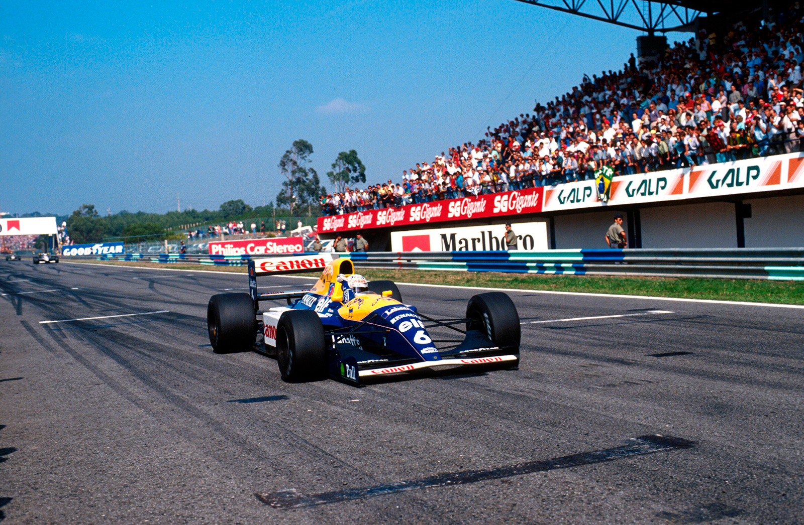

CAMPEONATO RODA PARA MANSELL

Williams perde vitória certa de Mansell, que é desclassificado por trabalho de mecânicos na pista rápida dos boxes. Patrese, brilhante e humilde, é pole; cede comando ao companheiro e herda vitória. Senna é 2º e tem tri à vista. Martini quarto. Piquet, 5º, bate Schumacher.
Por Francisco Santos
O Estoril não é lugar de sorte para Nigel Mansell. Está escrito que, apesar de já ter ganho aqui duas vezes, e de ter sido aqui que em 1990 igualou o recorde de vitórias de Stirling Moss, esta corrida e, principalmente, as suas paradas de box são azaradas. No fundo, as suas duas desclassificações, em 1989 e agora, consequência de eventos ocorridos durante cada uma das trocas de pneus, não tiveram nada a ver com azar. Foram fruto de erros básicos, quase infantis, dele – em 1989 – e de sua equipe – a Williams, este ano! Agora, para piorar as coisas, a Williams cometeu dois erros: primeiro, ao sinalizar a Mansell que o trabalho de troca de pneus estava completado, quando, na realidade uma das quatro duplas de mecânicos não tinha terminado o seu trabalho; depois, ao colocar uma roda na pista rápida dos boxes, o que é proibido pelo Regulamento Desportivo dos Campeonatos Mundiais da FIA (Art. 133). De realçar desde já que ao contrário de 1989, Nigel Mansell este ano, longe de ser o culpado. foi a grande vítima pela incompetência ocasional da sua equipe, perdendo praticamente as chances que ainda tinha de bater Ayrton Senna. O brasileiro foi o grande beneficiado com a roleta do Estoril deste ano: sem possibilidades de lutar pela vitória com as Williams/Renault, conseguiu um precioso segundo lugar que lhe aumenta a vantagem para 24 pontos, com apenas 30 ainda por disputar. Se Ayrton foi o grande ganhador do dia, o vitorioso foi a grande figura do fim de semana, esse espantoso, surpreendente e uma das maiores figuras da F1 atual – o jovem veterano e ímpar esportista Riccardo Patrese. Conseguir sacar a pole às McLaren, neste caso a Berger, e ainda por cima no carro reserva – inicialmente preparado para Mansell – é obra. Depois, fazer um arranque impecável (para ele é excepcional…), manter a liderança na frente de Mansell, fazendo repetidamente as melhores voltas, depois ceder o primeiro lugar ao companheiro de equipe, e finalmente reagir à sua segunda vitória do ano com aquela invulgar simplicidade de estreante são joias raras no atual mundo cão da Fórmula 1. Dá gosto e alegria de ver. A outra figura da tarde foi Pier-Luigi Martini, a conquistar a melhor classificação da Minardi este ano e, principalmente, a disputar o terceiro lugar com Jean Alesi na Ferrari, o que diz bem do estado em que a Scuderia Ferrari está neste momento…
Passado de lutas
Esta prova tem tido sempre desenrolares e desfechos singulares. Seja pelo seu clima político-esportivo, envolvendo transferências, tramas e acertos entre pilotos, equipes e dirigentes; seja pelo estado da tabela classificativa do campeonato com dois ou mais contendores em briga pelo título. Seja ainda pelas peculiaridades da pista ou das condições atmosféricas, o interesse desta etapa do mundial tem-se mantido ao rubro na maioria dos anos. E, não apenas desde agora, nesta segunda fase da história do GP luso, desde 1984, no Autódromo do Estoril. Lembro-me das emoções do primeiro GP, no Porto, em 1958: primeiro ano do mundial de construtores; primeira prova com uma mulher ao volante de um F1 – Maria Tereza de Filipis; luta entre Moss e Hawthorn; o erro do box da Vanwall a não sinalizar a Moss a volta mais rápida de Hawthorn; o desportivismo de Moss impedindo que Hawthorn fosse desclassificado, não deixando que os espectadores empurrassem o seu carro, que rodou na última volta. Já no Estoril, em ’84, a estreia no campeonato com o emotivo tri de Lauda na vitória de Prost; em ’85, primeira pole e primeira vitória da Ayrton, no dilúvio que submergiu a pista; em ’89, o regresso da era de carros atmosféricos e o erro de Mansell nos boxes -dá ré, é desclassificado, não pára e se envolve num acidente com um dos dois pretendentes ao título – Senna – sendo por isso multado em US$50.000 e suspenso por um GP, o de Espanha; em ’90, as cenas da largada de Mansell em cima de Prost, e da fúria verbal deste contra Fiorio, dando início ao desenlace do Diretor Esportivo da Ferrari. E, nos últimos anos, a constante luta da Autodril – antiga proprietária do autódromo – com as Autoridades portuguesas, culminando este ano com a majestral jogada (para quem?…) da transmissão de posse para o Governo Português.
Nem mesmo em casa…
Fora em 1960, no circuito da Boavista, no Porto, a última vez que Mário Araújo “Nicha” Cabral participara no GP de Portugal. Estivera em 5” lugar antes do Cooper da Scuderia Centro-Sud avariar. Trinta e um anos depois, o público português não teve oportunidade de ver correr o seu novo piloto de F1 – Pedro Matos Chaves. Nem sequer teve a mínima chance de tentar – em vão, claro – pré~qualificar-se. Mais uma vez o carro de Enzo Coloni percorreu apenas umas escassas voltas. E, vá lá, termos tido a possibilidade de durante 24 minutos vermos o Coloni dar cinco voltas lançadas antes do motor Langford & Peck ter quebrado uma válvula! Pelo menos desta vez o carro ainda conseguiu sair dos boxes. Já foi um progresso em relação a Monza… Se desta vez a culpa não foi especificamente de Enzo Coloni ou de sua equipe, já que o defeito foi exclusivamente no motor que acabara de chegar da revisão, tudo, no fundo, é consequência do estado de total desorganização em que se encontra a Coloni. De lamentar que toda a esperança depositada (inclusive na conta bancária de Enzo Coloni) não tivesse sido correspondida. A grande atração da madrugada de 6a feira foi a nova AGS JH27, que aparecera em Monza, mas que apenas conseguira percorrer uns 200 metros. Vistosa, com nova pintura e bico arrebitado, o novo carro estreou da melhor forma, com Gabriele Tarquini conseguindo não só pré-qualificar-se como até mesmo bater Michele Alboreto e ser terceiro. Martin Brundle, apesar de ter sofrido uma quebra da fixação da suspensão à caixa de câmbio, foi o mais rápido de novo, seguido de Mark Blundell. Barbazza ficou a quase um segundo de Alboreto, Grouillard surpreendeu ao não passar, e Caffi teve problemas de estabilidade, os três fazendo companhia a Chaves no paddock dos “condenados”.
Patrese sublime
Com a pista ainda muito suja e úmida, o primeiro treine livre viu a estreia do novo motor Renault RS3B nas mãos de Riccardo Patrese. “Embora ainda com alguns problemas a baixa rotação”, serviu para o italiano bater Gerhard Berger por 0,6s neste pista bem do agrado do austríaco. Senna, com problemas de rolamento numa roda traseira, foi terceiro, com De Cesaris quarto. Mansell, com um motor com menos potência e rotações, fazia mais l,8s que Patrese. Moreno estreou um novo chassis Jordan e teve de o regular. Apesar disso foi 0,1s melhor que Piquet. Prost, Capelli e Martini completavam os dez primeiros tempos, sendo de realçar que, de novo, a Minardi se dá bem nesta pista. O céu começou a escurecer. Ao longe ouviam-se já os trovões da tempestade que se aproximava. Com a aproximação da primeira qualificação, o autódromo ficou sem energia elétrica, e, com isso, o início do treino foi atrasado uns 15 minutos. Era eminente a chegada da chuva. Os pilotos apressaram-se a sair para a pista para tentar ainda pegar a pista apenas úmida. Foi uma corrida incomum para a saída dos boxes. Berger foi dos primeiros, tanto que nos 20 minutos antes da chuva começar a cair ainda teve tempo para usar os seus dois jogos de pneus de qualificação. Resultado – novo recorde da pista: com 1.13,221. batendo Senna em mais de meio segundo. As duas Williams ficavam atrás do campeão, enquanto Martini e Capelli voltavam a dar bons sinais de competitividade. Na noite de sexta feira toda a região viveu uma das piores tempestades dos últimos anos, com enormes chuvas e ventos arrasadores acompanhados de ensurdecedora trovoada. Sábado nasceu com o céu mais desanuviado e o autódromo, com a pista lavada, e mais lenta pois toda camada de borracha depositada na véspera foi arrancada pelas chuvas noturnas. Patrese repetiu o melhor tempo da véspera de manhã, seguido de Senna, Berger e Mansell, enquanto Modena surpreendia com o quinto tempo, e Piquet chegava-se à frente com o sexto. Com a pole provisória na posse de Berger com o seu tempo recorde, esperava- se grande luta na última qualificação, embora a pista estivesse mais lenta. Logo na primeira meia hora Patrese tentou com o seu primeiro jogo de pneus, mas só conseguiu melhorar para 1.13,754 apenas dois milésimos pior que Senna na véspera. Mas, pior foi que no final da volta, o motor Renault quebrou. Como é sabido, Mansell tem preferência de uso do carro reserva. Patrese voltou chateado para o box e resignado. Entretanto, Mansell e Senna já haviam saído e feito as suas segundas tentativas. Patrese era afora quarto. Quando chegou ao box, a equipe já estava a preparar o carro reserva para ele fazer a sua segunda tentativa. No entanto, ele desconhece este carro e não acredita que possa melhorar o tempo. O seu engenheiro de pista insiste. Ele sai para a pista nos últimos minutos, a princípio sem muita convicção, mas na volta de aquecimento vê que as reações do carro estão ótimas e decide mesmo dar tudo por tudo. No box da Williams, Frank. Patrick Head, os mecânicos, todo o pessoal da Renault e da Elf assistem pela TV a essa volta espantosa, uma autêntica volta canhão – 1.13,001, a pole. Inalcançada por Berger, que ainda tenta no finalzinho da sessão, chega a meio da volta com alguma vantagem, mas nas últimas duas curvas os pneus degradam-se e o austríaco não consegue bater o italiano. “Foi uma surpresa – nunca imaginaria que pudesse conseguir a pole com um carro que não conhecia”, confessou Patrese no final.
Patrese: a vitória errada
Depois do warm-up em que as duas Williams confirmaram a sua superioridade, e Morbidelli e Martini as boas performances das Minardi, a maioria dos pilotos escolheu pneus C, enquanto Ayrton foi mais cauteloso, colocando B à esquerda. Preparava-se uma corrida bem tática da McLaren para defender a liderança de Ayrton no campeonato. Na largada, Patrese dispara na frente, Berger toma premeditadamente o meio da pista com intenção de bloquear qualquer tentativa de Mansell, mas este não se intimida, arranca muito bem, encosta à esquerda, empurrando Senna para a faixa da esquerda e depois na reta ultrapassa-o pela esquerda, numa manobra bem “à Mansell”. No entanto, o “leão” não ia acabar por ali com as suas manobras: na primeira curva corta de tal forma na frente de Senna que quase lhe arranca o bico, e até à curva dois passa quase por cima de Berger. Claro que o “leão” não podia ficar atrás de Berger, que o iria atrasar, mas essas duas manobras foram por demais arriscadas. Senna não gostou: “Só não batemos porque eu levantei o pé. Assim não dá”. Mansell estava a jogar tudo por tudo. Ele sabia que esta era a sua última chance real. Patrese na frente não seria problema, pois Mansell sabia que o italiano lhe cederia o comando quando fosse adequado. No entanto, as duas Williams não conseguiam ganhar muita vantagem a Berger, que, com pneus mais macios que Senna conseguia manter quase o mesmo ritmo dos líderes. Ao atravessar a linha de chegada pela 17ª vez, Patrese levanta o pé e deixa passar Mansell no retão. Estava consumada a tática Williams. Agora era só manter posições, trocar pneus e deixar Mansell ganhar a prova, com Patrese em segundo a roubar pontos de Senna. Tudo perfeito até aí, mesmo porque Senna não conseguia manter o mesmo andamento. Só que na parada de box de Mansell à 31ª volta deu tudo errado. A roda esquerda traseira não entrou bem, mas o responsável pela parada deixou Mansell sair. A Williams anda uns 20 metros, a roda solta-se, quase atropela os mecânicos da Lotus, e o carro pára na faixa de rolagem, junto ao muro dos boxes. Até aí, do mal o menos: apenas uma perda de tempo. O pior estava para vir: apavorados, os mecânicos da Williams carregam uma roda para junto do carro e colocam-na na roda ali mesmo, para lá da faixa divisória das faixas do pit lane. Mansell sai para a pista no momento em que Patrese passa, e inicia uma recuperação fabulosa, como seria de esperar dele. Bate várias vezes a melhor volta. Recupera de 17º à 31ª volta para 6º vinte voltas depois. Para nada. É-lhe mostrada a bandeira preta. Estava desclassificado. Pela segunda vez no Estoril. O resto pouco importava já. Patrese apenas completou a distância na frente, conseguindo uma vitória que declinara. Berger abandona com mais uma quebra de motor. Senna é segundo. Martini dá uma dor de cabeça tremenda à Ferrari lutando com Alesi para o terceiro lugar, mas contentando-se com um excelente quarto. Capelli é outro azarento ao abandonar com o bico solto a cinco voltas do final em quinto lugar, enquanto Gugelmin depois de uma boa prova fica fora dos pontos por pouco.
Porquê a desclassificação?
O pit lane é dividido em três faixas de rolagem: uma externa junto ao muro, ou faixa rápida, para circulação; uma intermédia, para aceleração e desaceleração; e uma interna, junto aos boxes, que segundo o Art. 133 do Regulamento Desportivo dos Campeonatos Mundiais da FIA “é a única área em que se pode trabalhar nos carros fora dos boxes”, sob pena de desclassificação. Portanto, os mecânicos nunca poderiam colocar a roda no carro na faixa rápida, junto ao muro, como se vê na foto das páginas a cores. Erro da equipe Williams. O carro deveria ter rolado para dentro da faixa interna e aí, mesmo diante de outro box, os mecânicos poderiam ter trabalhado. No Estoril verifica-se, no entanto, uma situação invulgar: de forma a facilitar a troca de pneus, as equipes pintam no asfalto linhas de aproximação servirem de guia a seus carros; só que essas linhas terminam na pista de desaceleração e não na faixa interna. Levando o regulamento à risca, todas as equipes fizeram a mesma infração nas suas trocas e todas poderiam ter sido desclassificadas. Mais: a Ferrari trocou as rodas as Alesi com a roda esquerda traseira na faixa rápida. E, o erro nasceu onde? Possivelmente fruto do sistema de sinalização da Williams: para cada roda existe uma dupla de mecânicos – o da roda e o da pistola. Terminada a troca da roda, na McLaren apenas o homem da pistola levanta o braço, enquanto na Williams os dois sinalizam. Desta vez, houve precipitação de quem comandava a operação (quem fica diante do carro) quando viu o homem da roda levantar o braço enquanto o da pistola se apercebia que a porca não estava bem apertada.